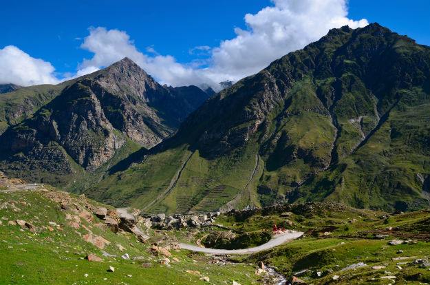
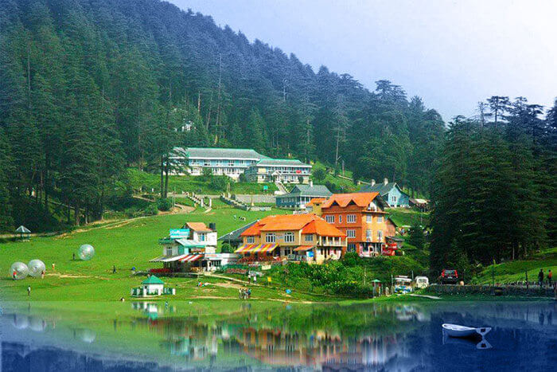

Welcome to Himanchal Pradesh, Himachal Pradesh literally "Abode of Snow" is a state of India located in North India. It is bordered by Jammu and Kashmir on the north, Punjab and Chandigarh on the west, Haryana on the southwest, Uttarakhand on the southeast, and the Tibet Autonomous Region on the east. At its southernmost point, it also touches the state of Uttar Pradesh. The name was coined from the Sanskrit—Him means 'snow' and achal means 'land' or 'abode'—by Acharya Diwakar Datt Sharma, one of the state's eminent Sanskrit scholars. Himachal Pradesh is known for its natural environment, hill stations, and temples. Himachal Pradesh had the fifteenth highest per-capita income of Indian states and union territories for the year 2013-14. Many perennial rivers flow in the state. Numerous plants produce surplus hydroelectricity that is sold to other states, such as Delhi, Punjab, and Rajasthan.Tourism and agriculture are additional important parts of the state's economy.
Tours to Chamba
Chamba is a town in the Chamba district in the state of Himachal Pradesh, in northern India. According to the 2001 Indian census the town is situated on the banks of the Ravi River (a major tributary of the Trans-Himalayan Indus River), at its confluence with the Sal River. Chambial were the Rulers of Chamba State Chambials use suffix Varmans. Though historical records date the history of the Chamba region to the Kolian tribes in the 2nd century BC, the area was formally ruled by the Maru dynasty, starting with the Raju Maru from around 500 AD, ruling from the ancient capital of Bharmour, which is located 75 kilometres (47 mi) from the town of Chamba. In 920, Raja Sahil Varman (or Raja Sahil Verma) shifted the capital of the kingdom to Chamba, following the specific request of his daughter Champavati. (Chamba was named after her). From the time of Raju Maru, 67 Rajas of this dynasty have ruled over Chamba until it finally merged with the Indian Union in April 1948, although Chamba was under British suzerainty from 1846 to this time.
Tours to Chamunda Devi
Chamunda also known as Sachchi Mata, Chamundi, Chamundeshwari or Charchika, is a fearsome aspect of the Devi and one of the Matrikas also considered as Divine Mother in Hinduism. She is also one of the chief Yoginis, a group of sixty-four or eighty-one Tantric goddesses, who are attendants of the warrior goddess Durga. The name is a combination of Chanda and Munda, two monsters whom Chamunda killed. She is closely associated with Kali, another fierce aspect of Devi. She is sometimes identified with goddesses Parvati, Chandi or Durga as well.
Tours to Palampur
Palampur is a green hill station and a municipal council in the Kangra Valley in the Indian state of Himachal Pradesh, surrounded by tea gardens and pine forests before they merge with the Dhauladhar ranges. Palampur is the tea capital of northwest India but tea is just one aspect that makes Palampur a special interest place. Abundance of water and proximity to the mountains has endowed it with mild climate. Palampur is also hometown of Capt. Vikram Batra who was awarded Paramvir Chakra (posthumous). The town has derived its name from the local word palum, meaning lots of water. There are numerous streams flowing from the mountains to the plains from Palampur. The combination of greenery and water gives Palampur a distinctive look. Palampur is at the confluence of the plains and the hills and so the scenery shows the contrast: plains on one side and the majestic snow-covered hills on the other side. In the backdrop of this beautiful town stands the Dhauladhar mountain range, which remains snow-covered for most part of the year.
Tours to Kullu Manali
Manali is a valley nestled in the mountains of the Indian state of Himachal Pradesh near the northern end of the Kullu Valley, at an altitude of 2,050 m (6,726 ft) in the Beas River Valley. It is located in the Kullu district, about 270 km (168 mi) north of the state capital, Shimla, 309 km (192 miles) northeast of Chandigarh and 544 km (338 miles) northeast of Delhi, the federal capital. The small town, with a population of 8,096,is the beginning of an ancient trade route to Ladakh and from there over the Karakoram Pass on to Yarkand and Khotan in the Tarim Basin. It is a popular tourist destination and serves as the gateway to Lahaul & Spiti district as well as Leh.
Tours to Shimla

Shimla also known as Simla, is the capital and the largest city of the northern Indian state of Himachal Pradesh, Dharamsala being the other capital. Shimla is also a district, which is bounded by Mandi and Kullu in the north, Kinnaur in the east, the state of Uttarakhand in the southeast, and Solan and Sirmaur. In 1864, Shimla was declared as the summer capital of British India, succeeding Murree, northeast of Rawalpindi. After independence, the city became the capital of Punjab and was later named the capital of Himachal Pradesh. It is the principal commercial, cultural and educational centre of the hilly regions of the state. As of 2011, the city had 171,817 permanent residents, and was one of the least populous capital cities in India.
Tours to Dalhousie
Dalhousie is a hill station now in Chamba district; in the northern state of Himachal Pradesh, India perviously it was part of Punjab. It is situated on 5 hills and has an elevation of 1,970 metres above sea level. The Dalhousie is a hill station in Himachal Pradesh, established in 1854 by the British Empire's government in British India as a summer retreat for its troops and officials after annexation of Sikh Empire Punjab. It is built on and around five hills, Kathalagh, Potreyn, Terah, Bakrota and Bhangora. Located on the western edge of the Dhauladhar mountain range of the Himalayas, it is surrounded by snow-capped peaks. Dalhousie is situated between 6,000 and 9,000 feet (2,700 m) above sea level. It was established on the land of a Sikh Empire Punjab after annexed by British. Dalhousie remains the part of Punjab until 1966. But controversial Punjab Reorganisation Act, 1966, trimmed it from Punjab the best time to visit is in the summer, and the peak tourist season is from May to September. Scottish and Victorian architecture are prevalent in the bungalows and churches in the town.